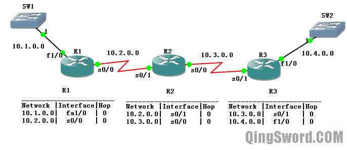
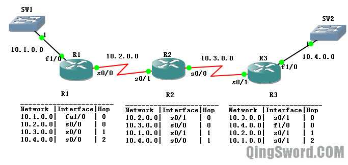
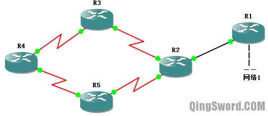
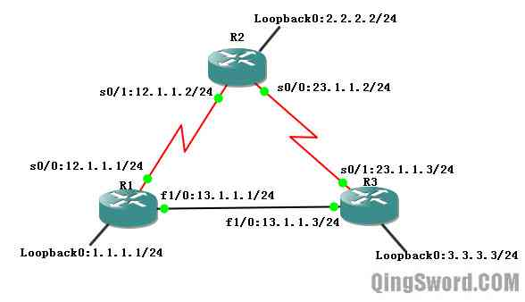
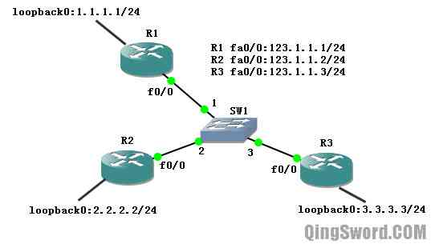
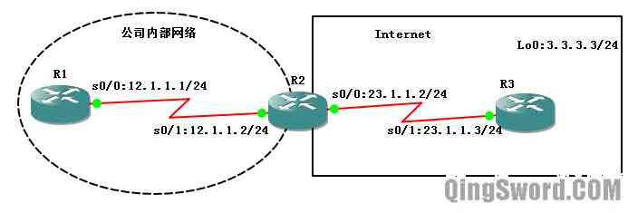
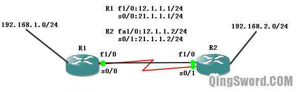

[CCNA图文笔记]-13-RIPv1协议详解
引言
这篇文章介绍经典路由协议RIPv1，虽然如今RIP协议已经很少出现在实际工作中，但可以用它作为入门，来理解路由间协议的工作方式；本文结合实例，详细介绍RIPv1的特征、配置。
文章目录
- 0×1.RIP主要特征
- 0×2.RIP路由互相学习过程解析
- 0×3.RIP定时器
- 0×4.RIP路由环路形成解析
- 0×5.距离矢量路由环路的解决方法
- 0×6.RIPv1配置实例
- a.负载均衡
- b.查看路由协议
- c.debug ip rip
- d.水平分隔
- e.被动接口配置
- f.单播更新实例
- g.触发更新
- h.缺省路由
- i.浮动静态路由
- j.更改定时器
0×1.RIP主要特征
RIP（Routing Information Protocol，路由信息协议），是早期应用比较普遍的内部网关协议，是典型的距离矢量路由协议，适用于小型网络，最大的缺点是无法在具有冗余链路的网络中有效的运用。
RIP协议的默认管理距离是120，RIP所接收的路由信息都被封装在UDP协议的数据报中，在UDP的520端口接收来自远程路由的信息。
RIP使用Hop Count（跳计数）作为路径选择的度量值。最大跳数是15，如果最大跳数大于15，则认为该网络失效。RIPv1采用广播式更新，RIPv2采用组播更新方式，RIP默认每隔30秒周期性的发送整个路由表给邻路由。
0×2.RIP路由互相学习过程解析
RIP协议运行前R1、R2、R3的路由表中只有直连路由的信息，如下图（图1）：
1）运行RIP路由协议后，R1、R2、R3宣告各自直连网络
2）假设R1先发送路由更新，R1将自己直连网络10.1.0.0和10.2.0.0以1跳的度量值告诉R2。
3）R2收到R1的路由表后，将自己的路由与R1传过来的路由进行比较，R2发现自己的路由表中没有10.1.0.0，R2记下这条路由以及路由对应的接口和跳数1；并且R2发现自己的路由表中已经有10.2.0.0这个条目，而且是直连条目，直连路由的管理距离是0，学到的RIP路由的管理距离是120，所以R2忽略R1传过来的10.2.0.0这个条目。
4）R2把自己路由表中的直连网络10.2.0.0和10.3.0.0以1跳的度量值告诉R3；并且将从R1那里学到的10.1.0.0网络以2跳的度量值告诉R3。
5）R3收到R2发过来的路由条目，将自己的路由表和R2发过来的条目进行比较，R3发现自己路由表中没有10.1.0.0，R3记录下这条路由以及对应端口和跳数2；R3发现自己路由表中没有10.2.0.0，R3记录下这条路由和对应端口以及跳数1；R3发现自己的路由表中已经存在10.3.0.0，并且是直连，比R2发过来的RIP更新有更好的度量值，R3忽略R2发来的10.3.0.0。这样R3学到了完整的路由条目。
6）同理，R3也会将路由发给R2，R2再发给R1，最后所有路由都可以学到所有条目。
运行RIP后各路由上的路由表如下图（图2）：
0×3.RIP定时器
在运行了RIP协议的路由上查看RIP定时器的情况：
/*显示路由器运行了哪些协议以及协议详细信息*/ R1#show ip protocols Routing Protocol is "rip" Outgoing update filter list for all interfaces is not set Incoming update filter list for all interfaces is not set Sending updates every 30 seconds, next due in 0 seconds Invalid after 180 seconds, hold down 180, flushed after 240 /* * RIP有4种不同类型的定时器: * * 路由更新定时器"Sending updates every 30 seconds", * 默认每隔30秒将自己的路由信息完整的拷贝给邻居。 * * 路由失效定时器"Invalid after 180 seconds", * 默认180秒，如果路由在这个期间没有收到某个路由的更新， * 它认为这个路由失效，这一情况发生时， * 路由器将给所有相邻路由发送一个更新消息，通知他们这个路由已经失效。 * * 抑制定时器(holddown time),"hold down 180", * 当收到指示某个路由不可达的更新数据包时，路由器将进入"抑制时间" * 抑制定时器默认180秒。 * * 路由刷新定时器"flushed after 240", * 用于设置某个路由成为无效路由并将它从路由表中删除的时间间隔。 * 路由失效定时器必须小于路由刷新定时器， * 这样可以为路由提供足够的时间来通知它的相邻路由有关这一无效路由的情况。 */
在不考虑使用任何防止距离矢量协议路由选择环路的情况下，可以这样来理解上面的四种定时器。结合下图（图3），默认情况下，网络中的路由30秒发送一次RIP路由更新，如果此时R1上面的"网路1"失效，R1发往R2的路由更新中不再含有"网路1"，R2上的路由失效定时器、路由抑制定时器、路由刷新定时器同时开启，连续6个更新周期（180秒）后，R2都没有收到R1发过来的"网路1"的路由更新，R2认为"网路1"失效，这里用到的就是路由失效定时器（倒计时180秒）。在R2认为"网路1"失效以前（180秒内），如果R2收到发往"网路1"的数据，R2任然转发数据给R1。在R2认为"网路1"失效的前的这180秒中，"网路1"在R2上处于抑制状态。在接下来的60秒中（240-180，也就是R2认为"网路1"失效后），R2认为"网路1"可能down掉了，并且不再转发去往"网路1"的数据给R1。
0×4.RIP路由环路形成解析
在上图中，R1将网络1的路由信息发给R2，R2学到了网络1并将度量值标记为1跳，即经过一台路由可以到达，下一跳是R1；路由R2将网络1的路由信息发给R3和R5，R3和R5都学到了网络1，并将度量值标记为2跳，即经过两台路由可以到达，下一跳是路由R2；R3和R5都将网络1发给R4，R4也学到网络1，并将度量值标记为3跳，下一跳路由是R3或R5，即从两台路由都能到达，R4去往网络1的数据将负载均衡。此时所有的路由都拥有一致的认识和正确的路由表，这时网络被称作”已收敛”。
此时，当网络1断开，R1将网络1不可达的信息发送给R2，R2将网络1不可达的信息发送给R3和R5，R4还不知道网络1不可达的信息，就在这个时候R4发送了一个更新给R5，认为通过R3可以到达网络1；当然也可能是发送给R3，告诉它通过R5可以到达网络1。这里假设是第一种情况，R5收到通过R4可以到达网络1的更新后，更新自己的路由表，并将网络1可达的信息发送给了R2，R2更新自己的路由表并发送给R3和R1。R3更新自己的路由表并发送给R4，至此，路由环路形成。
0×5.距离矢量路由环路的解决方法
距离矢量路由环路的解决方法有如下五种：
1）最大跳计数(maximum metric)，RIP允许跳计数最大可以达到15，任何需要经过16跳才能到达的网络都被认为是不可达的。
2）水平分隔(split horizon)，（使用图3举例）限制路由器不能按照接收信息的方向去将接收到的信息再发回去。比如路由R3和R5有关网络1的信息是从R2学习到的，它们不会将网络1的信息再从与R2相连的接口发回去。这样R4最终会学习到网络1不可达的信息。
3）路由中毒（route poisconing），路由中毒通过将故障网络设置成最大跳计数加1来暗示网络不可达，毒性反转是避免环路的另一种方法，比如R2学习到R1发送过来的网络1不可达的信息，首先它将网络1的跳计数更改成16跳，并且根据毒性反转，它将向R1送回一条网络1不可达的更新。
4）触发更新（triggered update），周期性发送更新，RIP是默认每隔30秒。
5）抑制定时器（holddown time），（使用图3举例）比如R2收到了R1发来的网络1不可达的信息后，R2首先标记此网络不可达，同时R2的抑制定时器启动，在RIP中抑制定时器是180秒倒计时，如果在抑制定时器到期前，又从R1收到网络1可达的信息了，那么删除这个抑制定时器，并且标记网络1可达；如果在抑制定时器期满前，收到一个来自其他路由的（R3或者R4）关于网络1的更新，并且这个更新具有更好的度量值（假设以前学到的是3跳，这里有其他路由告诉它只需要1跳就能到达网络1），那么R2删除抑制定时器，并且标记网络1可达；如果在抑制定时器到期前，R2收到另外路由器发来的关于网络1的更新，并且具有更差的度量值，那么忽略此更新；在抑制定时器期满后，R2删除抑制定时器，接收来自任何源路由的关于网络1的更新。
0×6.RIPv1配置实例
使用RIPv1来配置下图（图4）：
三台路由器配置相同的部分：
Router>en Router#conf t Router(config)#no cdp run Router(config)#line co 0 Router(config-line)#logg syn Router(config-line)#exec-t 0 0 Router(config-line)#exit
R1配置：
Router(config)#host R1 R1(config)#int s 0/0 R1(config-if)#ip add 12.1.1.1 255.255.255.0 R1(config-if)#no shut R1(config-if)#int fa 1/0 R1(config-if)#ip add 13.1.1.1 255.255.255.0 R1(config-if)#no shut R1(config-if)#int lo 0 R1(config-if)#ip add 1.1.1.1 255.255.255.0 R1(config-if)#no shut R1(config-if)#exit R1(config)#router rip /*配置RIPv1协议*/ R1(config-router)#net 1.0.0.0 /*宣告直连主类网络*/ R1(config-router)#net 12.0.0.0 R1(config-router)#net 13.0.0.0 R1(config-router)#end
R2配置：
Router(config)#host R2 R2(config)#int s 0/1 R2(config-if)#ip add 12.1.1.2 255.255.255.0 R2(config-if)#no shut R2(config-if)#int s 0/0 R2(config-if)#ip add 23.1.1.2 255.255.255.0 R2(config-if)#no shut R2(config-if)#int lo 0 R2(config-if)#ip add 2.2.2.2 255.255.255.0 R2(config-if)#no shut R2(config-if)#router rip R2(config-router)#net 2.0.0.0 /*宣告直连主类网络*/ R2(config-router)#net 12.0.0.0 R2(config-router)#net 23.0.0.0 R2(config-router)#end
R3配置：
Router(config)#host R3 R3(config)#int fa 1/0 R3(config-if)#ip add 13.1.1.3 255.255.255.0 R3(config-if)#no shut R3(config-if)#int s 0/1 R3(config-if)#ip add 23.1.1.3 255.255.255.0 R3(config-if)#no shut R3(config-if)#int lo 0 R3(config-if)#ip add 3.3.3.3 255.255.255.0 R3(config-if)#no shut R3(config)#router rip R3(config-router)#net 3.0.0.0 R3(config-router)#net 23.0.0.0 R3(config-router)#net 13.0.0.0 R3(config-router)#end
配置完成后大约等待十几秒查看一下R1的路由表：
/*查看R1的路由表*/ R1#show ip route 1.0.0.0/24 is subnetted, 1 subnets C 1.1.1.0 is directly connected, Loopback0 R 2.0.0.0/8 [120/1] via 12.1.1.2, 00:00:11, Serial0/0 R 3.0.0.0/8 [120/1] via 13.1.1.3, 00:00:07, FastEthernet1/0 R 23.0.0.0/8 [120/1] via 13.1.1.3, 00:00:07, FastEthernet1/0 [120/1] via 12.1.1.2, 00:00:11, Serial0/0 12.0.0.0/24 is subnetted, 1 subnets C 12.1.1.0 is directly connected, Serial0/0 13.0.0.0/24 is subnetted, 1 subnets C 13.1.1.0 is directly connected, FastEthernet1/0 /* * 此时R1拥有全网6条路由信息，其中3条是直连（C），3条是通过RIP学习到的（R） * 路由表中，C表示直连路由条目；R表示通过RIP学习到的路由， * D表示通过EIGRP学习到的路由条目，O表示通过OSPF学习到的路由条目。 * "2.0.0.0/8 [120/1] via 12.1.1.2, 00:00:11, Serial0/0"解释如下: * "2.0.0.0/8"是学到的远程网络，[120/1]是管理距离120和度量值1（跳）， * "via 12.1.1.2"代表去往2.0.0.0/8网络的下一跳是12.1.1.2， * "00:00:11"此路由条目已经存在的时间，这个就是更新定时器的值，递增到30秒自动归零， * "Serial0/0"是本路由去往2.0.0.0/8网络的外出接口。 */
断开R1和R2之间的链路，等网络再次收敛后查看R1的路由表：
/*关闭R1的s0/0接口*/ R1(config)#int s 0/0 R1(config-if)#shut /* * 网络收敛后查看R1路由表 * 可以看到去往"2.0.0.0/8"网络的路由条目发生了变化， * 它的下一跳变成了"via 13.1.1.3"，并且跳数变成了2， */ R1#show ip route 1.0.0.0/24 is subnetted, 1 subnets C 1.1.1.0 is directly connected, Loopback0 R 2.0.0.0/8 [120/2] via 13.1.1.3, 00:00:12, FastEthernet1/0 R 3.0.0.0/8 [120/1] via 13.1.1.3, 00:00:12, FastEthernet1/0 R 23.0.0.0/8 [120/1] via 13.1.1.3, 00:00:12, FastEthernet1/0 13.0.0.0/24 is subnetted, 1 subnets C 13.1.1.0 is directly connected, FastEthernet1/0 /*重新打开R1的s0/0接口，继续下面的实验*/ R1(config)#int s 0/0 R1(config-if)#no shut
a.负载均衡
从R1的路由表输出可以看到，去往23.0.0.0/24的路径有两条：
R 23.0.0.0/8 [120/1] via 13.1.1.3, 00:00:07, FastEthernet1/0 [120/1] via 12.1.1.2, 00:00:11, Serial0/0
R1去往23.0.0.0/8网络的数据将被负载到这两条线路上，在本例中R1和R3之间的以太网线路速率为100Mb/s，而R1和R2之间的串行线路速率仅仅只有1.544Mb/s，可以看出RIP协议并不会不考虑线路带宽，仅考虑度量值，RIP默认支持四条线路的负载均衡，可以使用下面的命令更改最大负载均衡线路数：
R1(config)#router rip /*可以通过?查看最大支持多少条线路的负载均衡*/ R1(config-router)#maximum-paths ? /*更改成最大支持16条线路负载均衡*/ R1(config-router)#maximum-paths 16 R1(config-router)#end
现在来测试一下负载均衡是否被使用:
/*在R1上开启ICMP调试*/ R1#debug ip icmp ICMP packet debugging is on /*测试ping*/ R1#ping 23.1.1.2 /*从下面的信息看出，去往23.1.1.2的数据全部是从R3走的（也有可能全部从R2走，dst就会是12.1.1.1），并没有负载到两条线路上*/ *Mar 1 00:32:01.583: ICMP: echo reply rcvd, src 23.1.1.2, dst 13.1.1.1 *Mar 1 00:32:01.663: ICMP: echo reply rcvd, src 23.1.1.2, dst 13.1.1.1 *Mar 1 00:32:01.679: ICMP: echo reply rcvd, src 23.1.1.2, dst 13.1.1.1 *Mar 1 00:32:01.755: ICMP: echo reply rcvd, src 23.1.1.2, dst 13.1.1.1 *Mar 1 00:32:01.787: ICMP: echo reply rcvd, src 23.1.1.2, dst 13.1.1.1
上面的测试中，之所以没有将数据负载到两条线路中，是因为思科的IOS软件提供了两种负载均衡的方式：
第一：基于每个分组的负载均衡，称作进程交换；
第二：基于每个目的的负载均衡，称作快速交换；
而IOS默认使用快速交换，如果使用进程交换，IOS将会将交替使用每条线路，下面关闭快速交换，使用进程交换：
/*关闭快速交换*/ R1(config)#no ip cef R1(config)#end /*再次进行ping测试*/ R1#ping 23.1.1.2 /*从调试结果可以看出，数据被均匀的分担到了不同的线路上*/ *Mar 1 00:37:53.147: ICMP: echo reply rcvd, src 23.1.1.2, dst 13.1.1.1 *Mar 1 00:37:53.179: ICMP: echo reply rcvd, src 23.1.1.2, dst 12.1.1.1 *Mar 1 00:37:53.223: ICMP: echo reply rcvd, src 23.1.1.2, dst 13.1.1.1 *Mar 1 00:37:53.271: ICMP: echo reply rcvd, src 23.1.1.2, dst 12.1.1.1 *Mar 1 00:37:53.303: ICMP: echo reply rcvd, src 23.1.1.2, dst 13.1.1.1
b.查看路由协议
在R1上使用"show ip protocols"查看R1上运行的路由协议：
R1#show ip protocols /*显示运行的协议类型*/ Routing Protocol is "rip" /*进入和外出方向有没有使用过滤列表*/ Outgoing update filter list for all interfaces is not set Incoming update filter list for all interfaces is not set /*RIP定时器的值*/ Sending updates every 30 seconds, next due in 16 seconds Invalid after 180 seconds, hold down 180, flushed after 240 /*重分布只有RIP，说明这里只接受和发送RIP协议*/ Redistributing: rip /*当前运行的是RIPv1，发送版本1，接收版本1和2的更新*/ Default version control: send version 1, receive any version Interface Send Recv Triggered RIP Key-chain Serial0/0 1 1 2 FastEthernet1/0 1 1 2 Loopback0 1 1 2 /*路由自动总汇是起作用的*/ Automatic network summarization is in effect /*负载均衡设置,默认是4，刚才调整成了16*/ Maximum path: 16 /*本路由直连的有类网络信息*/ Routing for Networks: 1.0.0.0 12.0.0.0 13.0.0.0 /*RIP从哪些路由收到更新信息、路由下一跳、管理距离、收到最后一次更新的时间*/ Routing Information Sources: Gateway Distance Last Update 13.1.1.3 120 00:00:16 12.1.1.2 120 00:00:19 Distance: (default is 120)
c.debug ip rip
使用"debug ip rip"实时监控路由收发RIP更新的情况：
R1#debug ip rip RIP protocol debugging is on R1# *Mar 1 00:50:08.223: RIP: sending v1 update to 255.255.255.255 via Loopback0 (1.1.1.1) *Mar 1 00:50:08.223: RIP: build update entries *Mar 1 00:50:08.223: network 2.0.0.0 metric 2 *Mar 1 00:50:08.223: network 3.0.0.0 metric 2 *Mar 1 00:50:08.227: network 12.0.0.0 metric 1 *Mar 1 00:50:08.227: network 13.0.0.0 metric 1 *Mar 1 00:50:08.227: network 23.0.0.0 metric 2 R1# *Mar 1 00:50:29.887: RIP: received v1 update from 13.1.1.3 on FastEthernet1/0 *Mar 1 00:50:29.887: 2.0.0.0 in 2 hops *Mar 1 00:50:29.891: 3.0.0.0 in 1 hops *Mar 1 00:50:29.891: 23.0.0.0 in 1 hops R1# *Mar 1 00:50:30.199: RIP: received v1 update from 12.1.1.2 on Serial0/0 *Mar 1 00:50:30.199: 2.0.0.0 in 1 hops *Mar 1 00:50:30.203: 3.0.0.0 in 2 hops *Mar 1 00:50:30.203: 23.0.0.0 in 1 hops R1# *Mar 1 00:50:33.115: RIP: sending v1 update to 255.255.255.255 via FastEthernet1/0 (13.1.1.1) *Mar 1 00:50:33.115: RIP: build update entries *Mar 1 00:50:33.115: network 1.0.0.0 metric 1 *Mar 1 00:50:33.119: network 2.0.0.0 metric 2 *Mar 1 00:50:33.119: network 12.0.0.0 metric 1 R1# *Mar 1 00:50:36.823: RIP: sending v1 update to 255.255.255.255 via Serial0/0 (12.1.1.1) *Mar 1 00:50:36.823: RIP: build update entries *Mar 1 00:50:36.823: network 1.0.0.0 metric 1 *Mar 1 00:50:36.827: network 3.0.0.0 metric 2 *Mar 1 00:50:36.827: network 13.0.0.0 metric 1 /* * 从sending v1和received v1可以判断，路由运行的是RIPv1， * sending是发送，received是接收，via代表从哪个接口发送或接收， * update to 255.255.255.255说明RIPv1使用的是广播式更新， * 并且从发送的网络更新中没有包含直连接口的路由以及对方发送过来的路由，可以推断出，R1所有接口都开启了水平分隔 * 默认路由接口的水平分隔是开启的，可以使用"show ip interface"查看。 * 从这些更新中同样可以看到，路由也向回环接口发送更新， * 向回环接口发送更新没有什么意义，稍后介绍如何取消向回环接口发送更新。 */ /*关闭所有debug调试*/ R1#u all All possible debugging has been turned off
d.水平分隔
查看某接口是否开启了水平分隔：
/*查看R1 s0/0接口是否开启水平分隔*/ R1#show ip interface s 0/0 /*可以看到输出中有下面这条，显示水平分隔已开启*/ Split horizon is enabled
关闭R1 s0/0接口的水平分隔，再使用debug ip rip查看发送更新情况：
R1(config)#int s 0/0 R1(config-if)#no ip split-horizon /*关闭水平分隔*/ R1(config-if)#exit R1(config)#end /*显示RIP调试信息*/ R1#debug ip rip RIP protocol debugging is on R1# /*关闭s0/0的水平分隔后，它对外发送的RIPv1更新将包含整个路由表的条目，还记得第五节讲到的解决路由环路的方法吗？关闭水平分割后，从这个接口发出去的更新将包含从这个接口接收到的更新，而这些更新本来是应该被水平分割功能阻止的*/ *Mar 1 01:06:54.363: RIP: sending v1 update to 255.255.255.255 via Serial0/0 (12.1.1.1) *Mar 1 01:06:54.363: RIP: build update entries *Mar 1 01:06:54.363: network 1.0.0.0 metric 1 *Mar 1 01:06:54.363: network 2.0.0.0 metric 2 *Mar 1 01:06:54.367: network 3.0.0.0 metric 2 *Mar 1 01:06:54.367: subnet 12.1.1.0 metric 1 *Mar 1 01:06:54.367: network 13.0.0.0 metric 1 *Mar 1 01:06:54.367: network 23.0.0.0 metric 2 /*关闭RIP调试输出*/ R1#undebug ip rip RIP protocol debugging is off /*再次查看s0/0接口信息,显示水平分隔已关闭*/ R1#show ip interface s 0/0 Split horizon is disabled /*可以使用下面的命令再次打开它*/ R1(config)#int s 0/0 R1(config-if)#ip split-horizon
e.被动接口配置
从前面的Debug信息中包含了RIP向回环接口发送的更新，这些更新都是没有意义的，可以将回环接口设置成被动接口，这样这个接口将不再向外发送路由更新：
R1(config)#router rip R1(config-router)#passive-interface loopback 0 R1(config-router)#end
f.单播更新实例
请在GNS3中搭建下面的拓扑，图中（图5），SW1是普通交换机（127.0.0.1:8000，非IOU中的交换机），路由全部是c3640，通过配置单播更新，实现路由R1可以和R2相互学习路由，但不与R3交换路由：
R1配置：
R1(config)#int fa 0/0 R1(config-if)#ip add 123.1.1.1 255.255.255.0 R1(config-if)#no shut R1(config-if)#int lo 0 R1(config-if)#ip add 1.1.1.1 255.255.255.0 R1(config-if)#no shut R1(config-if)#exit R1(config)#router rip R1(config-router)#net 123.0.0.0 R1(config-router)#net 1.0.0.0 R1(config-router)#passive-interface default /*将所有接口都设置成被动接口*/ R1(config-router)#neighbor 123.1.1.2 /*设置单播邻居IP*/ R1(config-router)#end
R2配置：
R2(config)#int fa 0/0 R2(config-if)#ip add 123.1.1.2 255.255.255.0 R2(config-if)#no shut R2(config-if)#int lo 0 R2(config-if)#ip add 2.2.2.2 255.255.255.0 R2(config-if)#no shut R2(config-if)#exit R2(config)#router rip R2(config-router)#net 123.0.0.0 R2(config-router)#net 2.0.0.0 R2(config-router)#passive-interface default R2(config-router)#neighbor 123.1.1.1 /*指定R1为邻居*/ R2(config-router)#end
R3配置:
R3(config)#int fa 0/0 R3(config-if)#ip add 123.1.1.3 255.255.255.0 R3(config-if)#no shut R3(config-if)#int lo 0 R3(config-if)#ip add 3.3.3.3 255.255.255.0 R3(config-if)#no shut R3(config-if)#router rip R3(config-router)#net 3.0.0.0 R3(config-router)#net 123.0.0.0 R3(config-router)#passive-interface default R3(config-router)#end /*R3没有设置邻居*/
使用show ip route分别查看R1、R2、R3上面的路由信息，发现R1和R2可以彼此学习到路由信息，R3学习不到任何路由信息，也不向外发送任何路由信息。使用debug ip rip在R1和R2上可以查看到"sending v1 update to 123.1.1.2"这样的单播更新包。
g.触发更新
距离矢量路由采用的是周期性更新，可以在串口上使用触发更新，以太网接口不支持触发更新：
R1(config)#int s 0/0 R1(config-if)#ip rip triggered
h.缺省路由
如下图（图6）所示，R1是公司内部路由，R2是公司边界路由，R3相当于ISP的边界路由。在公司内部运行了RIPv1协议。如果公司内部有许多路由，为了访问Internet，需要在公司内部每台路由上面都做默认路由指向公司边界路由R2。其实这里可以使用RIP缺省路由自动向公司内部路由宣告一条默认路由。然后在R2上做一条默认路由指向ISP的边界路由R3即可：
R1配置：
R1(config)#int s 0/0 R1(config-if)#ip add 12.1.1.1 255.255.255.0 R1(config-if)#no shut R1(config)#int lo 0 R1(config-if)#ip add 1.1.1.1 255.255.255.0 R1(config-if)#no shut R1(config-if)#exit R1(config)#router rip R1(config-router)#net 1.0.0.0 R1(config-router)#net 12.0.0.0 R1(config-router)#end
R2配置：
R2(config)#int s 0/1 R2(config-if)#ip add 12.1.1.2 255.255.255.0 R2(config-if)#no shut R2(config-if)#int s 0/0 R2(config-if)#ip add 23.1.1.2 255.255.255.0 R2(config-if)#no shut R2(config-if)#router rip R2(config-router)#net 12.0.0.0 /*声明R2是默认路由源，这样R2就会向其他RIP路由宣告自己是默认路由*/ R2(config-router)#default-information originate R2(config-router)#exit R2(config)#ip route 0.0.0.0 0.0.0.0 23.1.1.3 /*默认静态路由向外指向R3*/ R2(config)#end
R3配置：
R3(config)#int s 0/1 R3(config-if)#ip add 23.1.1.3 255.255.255.0 R3(config-if)#no shut R3(config-if)#int lo 0 R3(config-if)#ip add 3.3.3.3 255.255.255.0 R3(config-if)#no shut R3(config-if)#exit R3(config)#ip route 12.1.1.0 255.255.255.0 23.1.1.2 R3(config)#end
下面是R1的路由表：
/*可以看出，R1上面通过RIP学到了一条默认路由，指向R2*/ R1#show ip route 12.0.0.0/24 is subnetted, 1 subnets C 12.1.1.0 is directly connected, Serial0/0 1.0.0.0/24 is subnetted, 1 subnets C 1.1.1.0 is directly connected, Loopback0 R* 0.0.0.0/0 [120/1] via 12.1.1.2, 00:00:25, Serial0/0
此时R1上虽然没有去往R3回环接口的路由，但是R1 ping 3.3.3.3仍然能够ping通，就是因为这条从RIP学习到的默认路由，但如果使用高级ping命令，让R1使用IP1.1.1.1作为源去ping R3，就ping不通了，为什么呢？因为R3上只有一条去往12.1.1.0/24网段的静态路由，它并不知道发往1.1.1.1的数据应该怎么发送，所以丢弃。
i.浮动静态路由
如下图（图7）所示，R1和R2使用快速以太网和串行线路相连，假如R1是公司总部路由，R2是分部路由，它们之间的快速以太网线路模拟快速专线连接，而串行线路模拟普通慢速线路；R1和R2运行RIPv1协议，在没有出现故障前，总部和分部使用快速专线通信，当专线发生故障时，要求自动切换到慢速串行线路，并且保持总部和分部的数据通信正常：
R1配置：
R1(config)#int fa 1/0 R1(config-if)#ip add 12.1.1.1 255.255.255.0 R1(config-if)#no shut R1(config-if)#int s 0/0 R1(config-if)#ip add 21.1.1.1 255.255.255.0 R1(config-if)#no shut R1(config-if)#int lo 0 R1(config-if)#ip add 192.168.1.1 255.255.255.0 R1(config-if)#no shut /*RIP仅宣告内部网络和专线，没有宣告串行慢速线路*/ R1(config-if)#router rip R1(config-router)#net 192.168.1.0 R1(config-router)#net 12.0.0.0 R1(config-router)#exit /*手动配置一条静态路由，使用串行线路到达R2，并且管理距离配置成130*/ R1(config)#ip route 192.168.2.0 255.255.255.0 21.1.1.2 130 /*这样，根据路由选路原则，子网掩码长度相同的前提下，RIP的管理距离是120，而静态路由的管理距离是130，所以，首先将RIP条目放入路由表，只有当去往192.168.2.0/24的RIP条目消失后，这条静态路由才会进入路由表，这就是浮动静态路由原理的基础*/
R2配置：
R2(config)#int fa 1/0 R2(config-if)#ip add 12.1.1.2 255.255.255.0 R2(config-if)#no shut R2(config-if)#int s 0/1 R2(config-if)#ip add 21.1.1.2 255.255.255.0 R2(config-if)#no shut R2(config-if)#int lo0 R2(config-if)#ip add 192.168.2.1 255.255.255.0 R2(config-if)#no shut R2(config-if)#exit R2(config)#router rip R2(config-router)#net 192.168.2.0 R2(config-router)#net 12.0.0.0 R2(config-router)#exit R2(config)#ip route 192.168.1.0 255.255.255.0 21.1.1.1 130 /*R2上也配置一条去往R1内部网络的静态路由指向R1的串口IP，管理距离是130*/
这个时候随便在哪个路由上查看路由表，都只能看到RIP学到的条目
R2#show ip route 21.0.0.0/24 is subnetted, 1 subnets C 21.1.1.0 is directly connected, Serial0/1 12.0.0.0/24 is subnetted, 1 subnets C 12.1.1.0 is directly connected, FastEthernet1/0 R 192.168.1.0/24 [120/1] via 12.1.1.1, 00:00:23, FastEthernet1/0 C 192.168.2.0/24 is directly connected, Loopback0 /*去往R1内部网络192.168.1.0/24是走的专线，即快速以太网*/
如果此时，我们手动关闭R2的fa1/0,再次查看路由表：
/*关闭fa 1/0*/ R2(config)#int fa 1/0 R2(config-if)#shut /*可以看到管理距离是130的静态路由进入了路由表，并且下一跳是R1的串口IP*/ R2#show ip route 21.0.0.0/24 is subnetted, 1 subnets C 21.1.1.0 is directly connected, Serial0/1 S 192.168.1.0/24 [130/0] via 21.1.1.1 C 192.168.2.0/24 is directly connected, Loopback0
注意：在这个例子中因为GNS3模拟器的关系，需要关闭两端的fa1/0接口才能让静态路由起作用，而真实环境中只要关闭一端的端口，另一端立即就会down掉。
j.更改定时器
RIP的四个定时器是可以更改的，但一般不建议更改，更改方法如下：
/* * 更改4个定时器的默认值语法： * timers basic updates invalid holddown flush */ R2(config)#router rip R2(config-router)#timers basic 20 120 120 180 R2(config-router)#end /*查看更改后的值*/ R2#show ip protocols Routing Protocol is "rip" Sending updates every 20 seconds, next due in 5 seconds Invalid after 120 seconds, hold down 120, flushed after 180